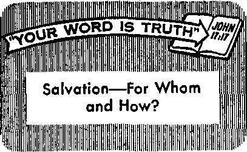

Wie Versatile Atom and You
•PAGE- a
wety First, Last and Always When Driving
PAGE 16
producing Ecuador—The World in a Nutshell
JULY 8, 1959
THE MISSION OF THIS JOURNAL
News sources that are able to keep you awake to the vital Issues of our times must be unfettered by censorship and selfish Interests. “Awake!" has no fetters. It recognizes facts, faces facts, Is free to publish facts, it Is not bound by political ambitions or obligations; it is unhampered by advertisers whoso toes must not be trodden on; it is unprejudiced by traditional creeds. This journal keeps itself free that it may speak freely to you. But it dote not abuse Its freedom. It maintains integrity to truth.
“Awake!" uses the regular news channels, but is not dependent on them. Its own correspondents are on all continents, in scores of nations. From the four corners of the earth their uncensored, on-the-scenes reports come to you through these columns. This journal's viewpoint is not narrow, but rs international. It is read in many nations, in many languages, by persons of ail ages. Through Its pages many fields of knowledge pass in review—government, commerce, religion, history, geography, science, social conditions, natural wonders—why, its coverage is as broad as the earth and as high as the heavens.
"Awake!” pledges itself to righteous principles, to exposing hidden foes and subtle dangers, to championing freedom for all, to comforting mourners and strengthening those disheartened by the failures of a delinquent world, reflecting sure hope for the establishment of a righteous New World.
Get acquainted with "Awake!" Keep awake by reading "Awake!"
Published Simultaneously in the United States bt the
watchtower bible and tract society of new york inc.
117 Wall Street Bnwklyn 1, N. Y., U- S. A,
and in England by
WATCH TOWER BIBLE AND TRACT SOCIETY
Watch Tower House. The Ridgeway N. H. Knorr, President
Printing this iaaue: 2,850,000
“Awak»!” is published in the following 19 IsngkMH: Simultaneously—Afrikaans, Danish, Dutch, English. Finnish, French, German, Greek, Italian, Japanese, Norwegian, Portuguese, Spanish. Swedish, Tagalog.
Monthly-—Chitonga, Indonesian, Ukrainian, Zulu
Yearly Mibscription mtea
•Map for monthly editions
U.S.A., 117 Wall Street, Brooklyn 1, N.Y. $1 Australia, n Bererfard M, Burwood, N.S.W. «/-
Canada, 150 Bridgeland Ave, Toronto 19, Ont. 11 Efiftaed, Watch Tower House,
The Ridgeway, London N.W. 7 7/-
BSV ZaalMld, 621 New North Road Auckland, S.W. 17/-South Africa, Prlrate Bag, Slangsfontein, Transvaal. 7/-Monthly editions cent half the above rates.
Landon N.W. 7, England Qwkt SuiTBt, fiaorDtary
a copy ftanlttintM for Bubflcriptlnus should be sent to the office la yaw country. Othenrfpe send your remittance tu Lcndoa. Natl«* af nplrstloft Lb sent at least two issues before subscription expires.
CHANGES OF ADDRESS should be made ■$ thirty days before year renewal date. Give as your old and new address (tf possible copy year aid label), Watch Tower, Watch Tower Hane, Tha Ridgeway, LMdM N.W. 7, England
Entered as reeond-rlam miter at Brookamp;oklya, N.Y. printed io Englmd
The Bible tiwtatlM read In “Awake!" U the Naw WwM Tread at Im <ri the Holy Soript*M« Whan ether trainlationt are and the following symbols wHl appear behind tha dtatlrec
.Aft _ American Standard Version JJ1/ — Citijolle Donay rental Jfo Jams Moffatt's rerslon
AT — An American Translation £?£) - The Emphatic DiMott J?o — J. B. RotMbam'a renlon
AV * Aut\ot±t«i Version (1611) JP — Jewish PubHcatlua Im. Rg — Berised Standard Version
Z>fl J. N. Darby's version Le - leaac Letter s renrigu Yg - Robert renion
CONTENTS
The Importance of Religion
Safety First, Last and Always
Introducing Ecuador—The World in a Nutshell Stars from the Moon Roundup Time in Newfoundland
Evangelizing the South Sea Islanders
“Your Word Is Truth”

CC A CTIONS speak louder than words,” A says an ancient proverb, and that with good reason. A good example can impress a lesson far better than much talk, be the talker a schoolteacher, a parent or a religious instructor. Paul the apostle appreciated that fact. That is why he wrote: “Become imitators of me, even as I am of Christ.”—1 Cor. 11:1.
That is why Jesus lashed out against the clergy of his day, saying: ‘The scribes and the Pharisees have seated themselves in the seat of Moses. Therefore all the things they tell you, do and observe, but do not do according to their deeds, for they say but do not perform.”—Matt. 23:2,3.
A modem case in point is that noted from the foUowing two excerpts taken from the Roman Catholic monthly, Liguorian, February, 1959. The first, under the heading “Is Your Religion Showing,” had, among other things, the following to say: “We may be devout in our churches, but they {non-Catholics] are not there to see. We may eat fish on Fridays, but they are seldom at the table with us. When we relegate religion to a marked-off part of our lives, instead of letting it overflow into every hour of the day, we are no longer Christ-bearers but Christ-hiders.”
And under the heading “Need of Witness,” among other things, the following appeared: “All experience seems to show that we of the laity do not teach very much truth to our acquaintances. What is more remarkable is that in our failure to teach we are not aware of any failure of duty.... It takes no great military expert to predict the results of a war in which large numbers of the soldiers do not fight, do not even know that there is a war on. . . . The great mass of the people we are fighting to win never meet an officer or hear an officer’s voice. They meet us.”
The foregoing excerpts from a quality Catholic publication pose some pointed questions. Whose fault is it that so many Catholics are not aware of any neglect of duty in their not witnessing to their religion? Why is it that so many of them do not even know that a war is on? Could it be because their clergy do not take the lead?
That this may be the case is apparent from the situation among the Christian witnesses of Jehovah. ‘There only those are appointed as presiding ministers or overseers who are exemplary in preaching activity. As a result, all the Witnesses really do witness. Yes, there is nothing like a good example!
FtOM the very beginning the family has been intimately dependent on religion. From religion the family drew its unity, its stability and its holiness. When the first human pair, Adam and Eve, worshiped the Creator and obeyed his law, they lived in peace and enjoyed life. But it was when they disobeyed God’s law and worshiped a false god that fear, disunity and family delinquency set in. Their children suffered from the ill-advised course their parents took. Their first son turned out to be. a murderer. Therefore, we are forced to conclude that true religion is a force for good, whereas false religion is a counterforce. It leads to family division and disappointment.
When we think of Noah’s family, Abraham's family, and other families of honorable mention in the Bible, we can see true religion acting as a unifying and sustaining power in family life. Regarding Noah the Bible says: “Noah was a righteous man. He proved fiimself faultless among his contemporaries. Noah walked with the God.” It was true religion that unified Noah and his family and led to their preservation through the Flood. Noah was a worshiper of Jehovah and so were his children. Religion fixed their smal, governed their desire ano determined their work. It proved to be a blessing to family life.—Gen. 6:9.
As for Abraham, Jehovah said: "For I have become acquainted with him in order that he may command his sons and his household after him so that they shall keep Jehovah’s way to do righteousness and judgment in order that Jehovah may certainly bring upon Abraham what he has spoken about him.” It was Abraham’s exclusive devotion to his God Jehovah that kept his family together.—Gen. 18:19.
God is the Author of marriage and the Creator of the family. No family can dwell long together without him. Where religion has grown weak, the family shows a corresponding weakness and a tendency to disintegrate. When religion remains strong in the family, it stands as a protective armor, safeguarding both the individuals in the family and the family circle.
What Religion Teaches the Family
The reason why true religion is the most potent factor for success in family life is that it teaches and makes possible the divine will regarding family relationship. It teaches man that he is not a product of evolution, but an intelligent creature created by an all-intelligent God. Therefore, man is a responsible individual, accountable to God for his every action. The Bible teaches that the same God that made man also made the family circle and purposed that man should live in a society made of families. Because marriage and family life have their origin with God and are dependent on him for success, the arrangements are sacred. They are not to be treated lightly, scoffed at or tampered with. They are Jehovah’s provisions for the survival of the human race. Therefore, to marry just for the sake of getting married is not only showing poor sense and judgment, but a flouting of what is sacred. An example of this occurred in a college town in 1942. A young girl told her professor that she was getting married. The professor wished her well and asked whom she was marrying. The girl replied: “I haven’t the faintest idea. But I’m not going to be left out. When these men come back from war, they’re going to be interested in younger women. I’m going to get a husband.” The account says: “Get a husband she did. Within two months she was married.” Can you imagine this marriage lasting on as flimsy a foundation as that? A solid religious foundation would have taught this girl spiritual values and the need for honoring sacred things. It would have prevented her from making foolish statements and rushing into an arrangement so serious without giving it serious thought.
Religion is important, too, because it is through true religion that we learn the true relationship of husband to wife, and of parent to child. These relationships are defined in God’s Word the Bible. The apostle Paul wrote: “Let wives be in subjection to their husbands as to the Lord, because a husband is head of his wife as the Christ also is head of the congregation, he being a savior of this body. In fact, as the congregation is in subjection to the Christ, so let wives also be to their husbands in everything. Husbands, continue loving your wives, just as the Christ also loved the congregation and delivered up himself for it... In this way husbands ought to be loving their wives as their own bodies. He who loves his wife loves himself, for no man ever hated his own flesh, but he feeds and cherishes it, as the Christ also does the congregation, because we are members of his body. ‘For this reason a man will leave his father and mother and will stick to his wife, and the two will be one flesh.* ” —Eph. 5:21-31.
True religion, as it teaches God’s Word, provides the meaning of life, the standard and guide by which it is to be lived. (Col. 3:5-14) It is only in the light of God and his Word that man himself can be understood. It is through Jehovah’s spirit and the faith that He imparts that we receive power to live harmoniously in the intimacy of the family, as Jehovah intended that we should live. The family gets its basis for true unity, stability and strength from the Christian faith rightly understood and practiced.
Further, true religion teaches us the nature of true love, the complemental nature of the sexes, the part the family plays in the Christian congregation and in man’s relationship to his Creator. It teaches right morals; in turn, these lead to wholesome conduct and a closeness in relationship between family members. True religion points out clearly through ethical concepts the road to good adjustment, to the achievement of all the goals of marriage, to order and peace in married life. Religion provides the counsel and wisdom that family life needs. It makes plain the need for cleanness, godliness and obedience in marriage. Religion emphasizes those qualities of humility and love, without which no marriage can succeed or family survive. Love and humility make adjustment, harmony, happiness and true success reachable, This because “love never fails,” says the inspired Word of God.—1 Cor. 13:8.
Religious Instruction Begins at Home
The family is God’s way of handing religion on to a child. It is His chief instrument for so doing. In fact, the teaching of true religion is one of the principal duties of the family. In the family religion is taught by being lived and learned, by being practiced. It is in the home that God arranged for children first to learn of him. Moses instructed the Israelites: “Listen, O Israel: Jehovah our God is one Jehovah. And you must love Jehovah your God with all your heart and all your soul and all your vital force. And these words that I am commanding you today must prove to be on your heart, and you must inculcate them in your son and speak of them when you sit in your house.” Yes, religious instruction is to be conducted in the home. —Deut. 6:4-7.
No doubt, the transferring of religious instruction to agencies outside the home has brought about a disregard for religion in the home. This has done much to weaken family ties. The truth remains that it is quite impossible to transfer this God-given obligation to a man-made institution outside the home. Religion can only be supplemented outside the home, but not taught In the same sense that the parents are to teach it. Unless the family provides a Christian environment in harmony with Bible doctrine, what is taught in the best of institutions is undone to a great extent by the bad example set at home. A Sundayschool teacher with twenty years’ experience says that she has come to the “very definite conclusion that it is desperately hard for Sunday school teachers to do more than interpret and make meaningful the religious teaching which the home gives the child.” And if the home does not supply the instruction, the Sunday school is usually a complete failure.
For religion to be effectively taught in the home, the parents themselves must take the lead in religious services. There is no escaping the fact that children see what goes on in the home. It does no good to don a “holier than thou” attitude when you pick up a Bible if you are a living terror when you put the Book down. If you appear religious before others and are not at home, children see right through your disguise. Your indifferent attitude toward religion will make them indifferent toward it. They will not be able to evaluate sacred things properly. Anything with a religious stamp on it becomes subject to suspicion and question. Above all, parents must be honest. A little boy was watching his father write a sermon. “Daddy,” he asked, “does God tell you what to say?” “Er-er —yes, my son,” came the slightly hesitating reply. “Well,” challenged the boy, “why do you cross out so much?” Perhaps, his sermon was not inspired after all!
Art Linkletter in his book Kids Say the Darndest Things! writes of a child that stated: “My dad is an Episcopalian minister.” “What have you learned from his sermons?" “Jesus never told a lie.” “Anything else?" “And he chopped down the cherry tree.” “Are you going to be a minister too?” “Not unless the Army was going to draft me.” “How did you come to think of that?” “That’s what my daddy did.” These children, of course, are growing up without much regard for religion, not because of religion, but because of their parents. Parents must set proper examples.
Teaching by Example
Children learn best by example. The book Love Is No Luxury states: "Religion is taught by being lived, and learned by being practiced. The curious thing about it is that every parent teaches his child about God whether he is aware of it or not. If he never worships God he is saying to the child, 'God doesn’t mean a thing to me.’ If he goes to church once in a while, he is saying, 'God means a little to me, but not much.’ By the way he lives he may be building for the child a little god-shelf, occupied by Science, Man, Tolerance, Intelligence, or what not. God will be God for the child if he is God for the father and the mother. When a father thanks God daily for the food on the table he is saying to the child, ‘From God comes everything. I depend upon him,’ There is need in the home for a certain amount of formal, conscious, and direct teaching of religion. But by far the greater part of it, and the most effective, is the indirect teaching which is the inescapable result of our daily living.”
If we want to instill good Christian principles and right morals in our children, we must first instill these in our own hearts and practice them. We cannot escape God’s laws: “For whatever a man is sowing, this he will also reap.” And it is easy enough to tell what we are sowing by observing our children. Your morals and self will be reflected to a large extent in what they say and do. True, you may teach your child the command: “Honor your father and your mother,” but do you? You may tell your child that it is wrong to steal, to commit adultery, to lie, to covet, but do you do these things? The do’s and don’t’s are mainly taught by example.—Gal. 6:7.
Linkletter writes about a child who told about his dad’s occupation. “My dad’s a cop who arrests burglars, robbers and thieves.” The interviewer asked, “Doesn’t your mother worry about such a risky job?” The boy’s answer, “Naw, she thinks it’s great. He brings home rings and bracelets and jewelry almost every week.” The way the lad stated it his dad must be a recipient of kickbacks, and the mother thinks “it’s great." So what is the child going to think? Cheating may seem normal to him.
There is no denying that very few parents teach their children religion in the home. And the bad example that they set about undoes everything others may instil] in the child. So we should not be surprised to see a flourishing crop of delinquents, a rise in immorality and crime, because these are merely a reflection of a decadent adult world. What the future holds for youth is reflected in the attitude of young people toward religion. In a recent survey of several hundred college students only 4 percent said they most wanted religious values in their marriage. This can mean only one thing—that today’s parents have miserably failed in word and in deed to inculcate in children the need of religion for a successful family life. And as cleric Albert L. Neibacher of New York city stated: “Unless today’s parents set their homes in order, tomorrow’s world will be one of even greater rebellion, lawlessness and confusion.”
What to Do
Now, in all probability your home has a Bible. Most homes do. Study it. This Book offers safeguards for the minds and hearts of the men who will accept it- It reveals the thoughts of the Creator. Through getting a right knowledge of what it says we can make our minds over, putting things in the right order and pleasing God. Psalm 119:9 puts the matter very simply: “How will a young man cleanse his path? By keeping on guard according to your word.” Know what the Bible says and believe it. Apply its instructions, use it as your life guide. As Paul advised the young man Timothy, you must be “a workman with nothing to be ashamed of, handling the word of the truth aright.” —2 Tim. 2:15.
This course is valuable to you because it brings happiness and contentment now. It provides against the forces of delinquency. It will be a safeguard through the impending time of trouble, Armageddon. Bible principles will improve-your family life, they will help you to rear better children and to have a more peaceful, contented mind. Most important of all, true religion in the home means peace with God and life to all who conform their lives to his Word.
THE youthful aTOMK.............
doing a man-size ™E VERSATILE
job. Less than two ades ago (December 2; 1942) a group of scientists lighted the first of their atomic fires. This sparked the beginning of what man has called—the atomic age.
As recently as 1954, pri
to afff
.. ■■ - 'Jr.
vately operated nuclear ______
power plants were nothing but brig$^
dreams on paper* But today there are
ng, vacuuming, by atomic power. Atom power has be-Ifeun to conquer the seas. At the time of the writing of this article the United States had six nuclear-powered submarines operating. Some fourteen more are being built and a nuclear-powered guided-missile cruiser and
iCraft carrier are under construction, le Nautilus sailed some 60,000 miles on
the United States at least three such plants z an amount of uranium no bigger than the
in operation, generating electricity for homes and industries; four additional ones are being built and eleven more are planned. William L. Laurence, the science editor of the New York Times, says that “by 1980, it is expected, two-thirds of all new additions to our electric generating capacity will be nuclear.”
Laurence further reveals that Britain plans to have twenty atom power plants in operation by 1965 and that within twenty-five years Western Europe will be getting more electricity from atomic power than it produces today from all its coal, oil and hydroelectric plants. There are some thirty-four or more major-size atom power plants under construction or planned by various nations, and several of them are about ready for operation. Before 1967, Euratom, a combine of six European nations, anticipates nuclear power plants with a total capacity of 15,000,000 kilowatts. The Soviet Union is reported to have some five 70,p00-kiIowatt plants of various types uhder construction. The first of the five was to have been completed by
size of a light bulb. The Russians have launched an atomic icebreaker capable of sailing three years without refueling. Japan has announced plans to build an atomic submarine tanker that will travel under the waves at twenty-two knots. Both Great Britain and Germany have plans to produce atom-powered ships. The United States is scheduled to launch the world’s first nuclear-powered passenger-cargo vessel in 1960. The ship, the N.S. Savannah (“N.S.” for nuclear ship), is estimated to cost about $40,250,000. It will carry sixty passengers, cruise at twenty knots, run for 300,000 miles or about three and a half years without refueling.
Radioisotopes Save Billions
Despite the statistics, the nuclear power industry story is no “get-rich-quick” business, because its initial costs are high. Just to build an average-size reactor will cost up to $30,000,000. In the United States, where oil, coal and water are plentiful, conventional power is, on an average, at least three times cheaper than the most
the end of 1958. So right now big atomic
efficient atomic power produced today. In
reactors are providing the current for lights, refrigerators, television sets and other household appliances. Men and women of the atomic nations are now cooking,
Britain, however, where coal is scarce and expensive, nuclear power by 1963 will be no more expensive than conventional power. Therefore, the incentive for atomic
power is much greater in that land ami in lands where fossil fuels are scarcer than in the United States, where fuels are plentiful and cheap.
However, there is one field where the atom payoff is brighter than had been expected, that is, in the field of radioisotopes. Dr. Willard F. Libby, of the Atomic Energy Commission in the United States, estimated that these tiny bits of “hot” matter, as they are called, saved the United States industry some $500,000,000 in 1957 by improving various processes. These savings, he believes, “will reach $5,000,000,000 annually in 10 years, more than twice the entire yearly cost of the AEC’s present program, including defense.”
What are radioisotopes or “hot” atoms? They are atoms that have been made radioactive in an atomic reactor. These atoms emit rays that are easily detected and measured with radiation instruments, such as a Geiger counter. The fact that its atoms are radioactive does not alter the chemical behavior of the substance. They merely make their presence as part of the substance known through the rays that they emit. It is this fact that makes them invaluable to scientists.
how are radioisotopes used by atomic scientists? They are used as tracer isotopes to reveal the mechanism of chemical reactions and of biological processes. Physicians can follow the complicated paths of chemicals within living organisms. Industries harness the radioactive elements in many ways: to control thickness of materials, to make X-ray pictures revealing structural flaws; paper mills use isotopes to measure paper thickness, etc. Today about 1,700 industrial organizations, including 250 of the 500 largest corporations in the United States, are licensed to use radioisotopes. One manufacturer gives some seventy different classes of use for radioisotopes in industry alone. For example, under process control it lists: “measuring and monitoring all sorts of things such as the thickness of steel sheets and plastic films, the level of liquids in tanks, the uniformity of paint and enamel coatings. Then there is testing; the tarnish resistance of silver plate, the effectiveness of soaps, the answers to posers such as how long a film of toothpaste protects your teeth, how deep does cold cream penetrate your skin, how thoroughly do dry cleaning methods remove spots? And there are the applications in the service industries; Where are buried pipes leaking? how do you find a manhole lost in the snow? how long will an asphalt highway last?” The field for radioisotopes is almost limitless.
In steel mills, for example, a sheet is rolled out hot at about forty miles an hour. Old methods were slow about revealing flaws in the steel. But radioisotopes work almost at the speed of light. If the sheet of steel becomes thicker than desired, a. radiation measuring gauge notes the variation immediately and automatically makes the needed adjustments. If a flaw is detected in the steel, atom-control gauges bring the operation to a stop within a few feet of the trouble. Thus millions of dollars are saved in materials and time.
Radioactive atoms are helping oil men find new oil pools. Some 87 percent of the wells drilled today are “dry holes.” Wet or dry they cost an average of $100,000 apiece to dig. Now with the use of scintillation counter techniques an oil pool can be mapped above ground. Its size and shape can be closely predicted before the drillers begin their work. Think what a time- and money-saver this is!
For the first time since 1839 there is a basic change in curing rubber. Today tires are being vulcanized by nuclear radiation. Irradiated tires are expected to wear longer and resist deterioration better than nonirradiated tires. Radioisotopes are also used as tracers to determine the amount of rubber worn off a tire by measuring the radioactivity of the tire track on the asphalt pavement. Radioactive atoms are used to determine the density and so the firmness of sites for aircraft runways, roadbeds and dams. Once it took men thousands of hours to get the answers to these questions. Now with radioisotopes they have their answers in a fraction of that time.
In the auto industry radioisotopes are used to check the wear of piston rings. First radioisotopes are introduced into the rings. Then the motor is operated. The worn-off iron particles of the radioactive rings are easily measured in the oil, In this way the durability of the piston ring as well as the efficiency of the oil is determined, By the old method it would have taken “sixty man-years of effort at a cost of about $1,000,000, while the radioisotope technique makes the same information available in four man-years at a cost of only $35,000."
The wearability of machine cutting tools, the durability of fabrics, the wearing quality of floor waxes are all brought to light by simple tests with radioactive atoms. Suppose an industry wants to test the efficiency of a new detergent. Radioactive tracers are introduced into soiled clothing. After the clothes are washed with the special detergent the test is made to see how much of the radioisotope tracers have been washed out of the fabric or remain in the cloth. Similar tests tell which vacuum cleaners, dusters and washers do the best work.
Atoms Aiding Agriculture
An estimated $13,000,000,000 worth of crops are lost to pests, weather, spoilage and poor farming methods in the United States each year. In a recent season rust alone ruined 40 percent of the oat crop from Texas to Iowa. Radioisotopes are aiding in combating this loss. With radiation a new hardy oat has been developed—a rust-resistant oat. It would have taken decades to bring about the new strain of oats the old-fashioned crossbreeding way. But seed irradiation has produced the strain in eighteen months. Scientists have also given planters a new variety of rice with short, stiff straw to withstand windstorms. A new type of corn has been developed, a corn with shorter stock and more grain on each cob. Hardier winter barley and a high-yielding variety of wheat, early-maturing peaches and radiation-improved peanut plants are all results of radioisotopes at work. The new peanut produces 30 percent more peanuts than the nonirradiated kinds. They are better shaped for mechanical harvesting and are disease resistant to boot.
Farmers in the United States spend over a billion dollars a year on fertilizer. Isotopes are showing farmers how best to apply the fertilizer. In certain plants it has been found that only 10 percent of a particular fertilizer applied to roots is actually absorbed, whereas 90 percent is absorbed when applied to the leaves. With this new knowledge farmers no doubt will be spraying certain fertilizers over the leaves rather than injecting them into the ground. Spraying will reduce the quantity of fertilizer needed as well as produce better results and, to top that, save money and time.
Radioactive atoms have shown cattle and poultry farmers what diets build bone, muscle, combat disease and produce larger amounts of milk, meat, eggs, etc. Isotope tests have helped to combat blights in flax, clover, alfalfa and other plants. Mosquitoes and cockroaches have been tagged and tracked to their breeding grounds and wiped out. Male screwworm flies have been sterilized with cobalt-60. The unfertilized eggs that the females lay have caused the flies to die out in that area. Someday this may be a means of controlling pests.
Isotopes at Work in Hospitals
Nearly 2,000 medical institutions and physicians use the new tool, radioisotopes, in treating more than a million patients a year. Throughout the world radiation is used to diagnose disease swiftly and more effectively. The radioisotope makes the functioning of the entire blood system quite visible once it has entered the system. Atom tracers are used to study the many complicated chemical reactions in blood and body cells and even to study the manner in which cells divide and multiply. This knowledge arms researchers with understanding of how malignancies occur and spread. Cobalt-60 is a means of checking serum hepatitis, the serious and sometimes fatal liver infection. Iodine-131 is used for detecting and treating thyroid disorders. Radioactive labeling of drugs discloses the effect of these drugs on the central nervous system, and the isotope is a means of checking on drug concentration that actually reaches various parts of the body.
Atom-smashers are providing an alternative to surgery. Radiation surgery of the pituitary, the master gland of the body, has been performed in limited experiments. Swedish scientists used the atomic "knife” to sever two nerve tracts on the human brain. This painless two-hour operation freed the patient from chronic pains and depression from which he had suffered for five years.
Atom tracers provide a quick way to diagnose more accurately what happens in cases of pernicious anemia and gastric ulcers. They are being used to determine what happens to the brains of people stricken with cerebral palsy and epilepsy. The health and defects of the heart are checked by the flow of tagged radioisotopes through the organ. Plastic surgery has been advanced because of the atoms. Doctors no longer have to wait long periods of time before knowing whether their skin grafts are actually a success. Now all they do is inject a little radioactive substance into the blood stream and listen for it with a counter around the graft. If the graft radiates, the doctors are sure that the blood and nerve connections have been made and that the operation is successful. As for more accurate diagnosis with radioisotopes, David O. Woodbury, author of Atoms for Peace, tells of a case where doctors were about to amputate a small boy’s badly infected leg. Just to make sure, “the patient received an injection of radiosodium before the crippling operation, and the leg was explored with a Geiger counter. To the doctors’ surprise, circulation was still good as far as the ankle, and they were able to save all but the foot. Ordinary diagnosis would have condemned the limb to the knee.” So atoms are at work.
Atoms at Work in Other Fields
Imagine keeping meats, fruits and vegetables in room temperature for long periods of time without spoiling. Irradiating foods makes refrigeration unnecessary. After only partial radiation, some foods, particularly meats, remain edible five times longer than they now do in the refrigerator. Potatoes exposed to gamma rays may be stored for a year and a half in room temperature without sprouting. The vitamin content of foods, for the most part, remains unaffected by the process, but some foods develop an unpleasant taste. United States congressmen have eaten gamma-sterilized dinners. At least forty places throughout the United States are now preserving foods by irradiation.
Think what this could mean to nations that are in need of food and have no refrigeration. Irradiated foods could be easily distributed to these hungry millions.
A Soviet report describes how radiation is used to treat silkworm cocoons. A Japanese study reveals how isotopes are used to detect fingerprints that do not show up in regular tests. Archaeologists prize the atom as a tool in dating of organic matter. Weathermen measure snowfall with it and inform farmers how much water they will have for irrigation of their crops, which information helps the farmer to decide what crops and how much he should plant. Geneticists are elated over the weird and remarkable changes isotopes produce in flowers. Sometimes double flowers appear on one stem. A white carnation when bombarded with isotopes turned red. The structure of the carnation exposed to gamma irradiation has been so basically changed that it will from now on produce red blossoms as well as white ones.
Scientists speak of using hydrogen bombs for hollowing out harbors, blasting through mountains to change the course of rivers and as a means of creating deep underground stores of energy in the form of heat that can be tapped and put to work when needed. There appears to be no limit as to how the atom might be used.
But what about atom power for cars and airplanes? Experts say small atom power plants for commercial purposes are a long way off. Present power plants are too impractical. For example, a standard 3,000-pound car would need an atom power plant
weighing 80,000 pounds to move it along the highway. This may please the rubber industry but certainly not the motorist. An atomic auto battery is estimated to take up about 1,000 cubic feet of space and would cost somewhere around $8,000,000. Even a simple cube-shaped atomic flashlight cell would measure one foot on a side and would sell for about $8,000. ,
The same goes for atomic aircraft. Atom-powered planes would have advantages over conventional aircraft in that they would have an unlimited range and duration of flight. But how to shield the crew and passengers from harmful radiation is still a major problem. Hall L. Hibbard, senior vice-president of Lockheed Aircraft, said: “We are trying to develop a method of deflecting radiation. We have actually tried 21 different approaches. More than that I can’t say. But I will volunteer this: If man is smart enough to use nuclear power in peaceful pursuits—and he is—we believe he is smart enough to solve the radiation-shielding problem.” But this is still in the future.
However, atomic batteries have been made that convert atomic energy directly into electricity. Recently a five-pound atomic generator was described as having “no moving parts and is capable of doing the work of 1,450 pounds of the best electric batteries.”
These discoveries tell of new advances, new strides into the hitherto unknown. What an interesting time to be alive! This has come about through such a small thing as the atom.
Dew Roofs more Often
<L In the rural districts of the tiny island of Martinique there are many huts with roofs made of sugar-cane foliage. The foliage covers the roof, hanging like loose hair. Roofs of old were renewed only every two years; but since manure was replaced by chemical fertilizers in the sugar-cane fields, a new roof does not last more than three or four months.
AJAYI is a Nigerian. In common with thousands of his fellow countrymen he has a modern radio of which he is very fond, and his chief delight after a hard day’s work is to -sink into his armchair and tune in to one of the programs of the Nigerian Broadcasting Cor- £ j ■ poration. As the program changes he hears the musical tones of drum. This is a Nigerian “talkin^^'^S-. drum/’ the call sign of the N.B.C >
If it is the Western Region program from Ibadan he will recognize the drum's call sign in the Yoruba language, “N’lbadan Ta wa/t’a gbe njaiye; nfIbadan Ta waf)J meaning “Ibadan is where we are, where we are enjoying our lives; Ibadan is where we are.” Today the use of the “talking drum” is on the decline and its use by the N.B.C. is part of an effort to revive the dying art.
To say that a drum can talk calls for an explanation. Known to the Yorubas as gangan, it is made of goatskin and is of convenient size to sling over the left shoulder and fit snugly under the arm, where the drummer can pound it with his curved drumming stick. Along the sides of the drum are stretched many leather strings, which the drummer grasps with his left hand. By tightening his grip on the strings the drummer is able to vary the tension on the drumhead and so produce notes closely resembling the musical tones and glides of Yoruba speech. Hence the name “talking drum.”
The talking drum is not a new thing. It is as old as the country itself. In days gone by the drum was used for many purposes. It praised and vilified; it incited and entreated; it blessed and cursed; it convened and dispersed. Drumming was a profession that was hereditary in certain families. The art was handed down from father to son and thus a high degree of skill was acquired and maintained. But down the

years the art has been almost lost and few are the really skilled drummers today.
Ayan is said to be the god of the drum, and drummer families usually name their children after Ayan, such as Ayanshola (Ayan gives me honor) and Ayanleke (a worshiper of Ayan has come). Any man whose name contains the word Ayan is from the drummer family. Drummers swear in his name to confirm the truthfulness of what is said or the fairness of an act, and such oath is accepted by fellow drummers as putting to an end all doubts. It is believed that if the swearer has sworn falsely, Ayan will bring serious judgment upon him.
In the last century the talking drum played its part in the many wars fought in Nigeria. In 1879 the town of Off a was besieged by a great fighter named Karara. The drum played a great part in fanning the embers of pride that drove him to attack the town. Its influence dominated the whole affair. In the beginning Karara's drummer worked him up for the offensive. The drum talked furiously. It said: “Karara, if you do not capture Offa you are like a dog! Karara, if you do not capture Offa, you have become as mere cattle!”
Today the drum is kept for more peaceable purposes. At religious ceremonies of all kinds, state occasions and social gatherings the throbbing rhythm of the drum is prominent. Normally every Yoruba afin (palace) has a set of drums at the entrance. It is the duty of this drumming set to announce each visitor as he enters the palace, so that the oba (king) may know who has entered. The drums also announce his departure, so that the oba knows his visitor has left.
Of course, it is necessary to learn the language of the drum to be able to understand it, and to do this one has to be fluent in Yoruba speech. Yoruba society comprises various families, each family having its own oriki. The oriki is a kind of code word or expression portraying the status, profession, religion or the outstanding quality or tradition in the family. The oriki as produced by the drummer becomes a theme song with words extolling the virtues of the person or family concerned. The oriki may be quite long and intricate and is well known to the family. The drummer must also know it and be able to reproduce it perfectly on his drum so that the family listening to the varying tones of the drum can easily discern in it the words of their own oriki.
A successful drummer must have all these orikis at his fingertips and be able to reproduce them from beginning to end without a mistake. A man may be skillful in manipulating the drum but without a detailed knowledge of many orikis he will never achieve success, for the talking drum profession depends upon the past glories of a man’s family and the pride he takes in them.
At marriages and funerals, special and appropriate music is played on the drums. Every visitor of note is always announced and, if he happens to be a dancer, his favorite dance is played, the drummers getting up to meet him as he dances to a seat prepared for him.
The Yoruba religion is given to deifying its heroes and great men. They are referred to as orishas, and each orisha has his own oriki. The Yoruba god Shango has many orikis or code words, which are usually very cryptic in meaning, such as “he who makes fire with a small piece of stick to warm himself,” and “the king did not hang,” The drummer has to be thoroughly learned in these orikis in order to take part in any worship or festival of Shango.
These gatherings, social and otherwise, are where the skilled drummer makes money. One of the persons in attendance will be introduced to the drummer by his oriki. Now the drummer has the code word and it remains for him to make his drum talk, giving the full description of that family. Having thoroughly expounded the tradition and virtues of the family, he is now entitled to a gift, which may be anything from five cents to two or three dollars. Frequently a person who is not disposed to dance will suddenly rise up and begin to dance as the drummer beats out his family's oriki.
In addition to gangan there are several other kinds of drums that combine to produce drum orchestras. The most popular is known as the dundun orchestra, used mainly for dancing and comprising six different drums, sometimes accompanied by cymbals and flute, lya ilu, meaning “mother drum,” is the chief of the orchestra. It does the talking and dictates the style and rhythm, Kerikeri is the most strenuous to perform, but gangan is a unique drum, Though it is part of the dundun orchestra, it may be detached from the group and played independently. It is the battle drum, the drum for rough occasions. Its talking potentiality is almost limitless. In the hands of a master performer it can incite to jealousy and war and can eulogize a man to the point where he will give out all his belongings as gifts.
The drumming profession can be quite a paying one. The trade is seasonal; at the time of harvest, when plenty of money is flowing, there will be more performances and bigger gifts than there were during the rains. But the essential thing to success is how well the drum can talk the right language—the oriki of the customer.
The Pony Rider
Mark Twain’s book Roughing It still contains one ot the best accounts ot the Pony Express rider: “In a little while all interest was taken up in stretching our necks and watching for the ‘pony rider’—the fleet messenger who sped across the continent from St. Joe to Sacramento, carrying letters nineteen hundred miles in eight days! Think of that for perishable horse and human flesh and blood to do! The pony-rider was usually a little bit of a man, brimful of spirit and endurance. No matter what time of the day or night his watch came, and no matter whether it was winter or summer, raining, snowing, hailing, or sleeting, or whether his ‘beat’ was a level straight road or a crazy trail over mountain crags and precipices, or whether it led through peaceful regions or regions that swarmed with hostile Indians, he must be always ready to leap into the saddle and be off like the wind!
'jj "There was no idling-time for a pony-rider on duty. He rode fifty miles without stopping, by daylight, moonlight, starlight, or through the blackness ot darkness—lust as it happened, He rode a splendid horse that was born for a racer and fed and lodged like a gentleman; kept him at his utmost speed for ten miles, and then, as he came crashing up to the station where stood two men holding fast a fresh, impatient steed, the transfer of rider and mailbag was made in the twinkling of an eye, and away flew the eager pair and were out of sight before the spectator could get hardly the ghost of a look....
'j’ “The stage-coach traveled about a hundred to a hundred and twenty-five miles a day (twenty-four hours), the pony-tider about two hundred and fifty. There were about eighty pony-riders in the saddle all the time, night and day, stretching in a long, scattering processiop from Missouri to California, forty flying eastward, and forty toward the west, and among them making four hundred gallant horses earn a stirring livelihood and see a deal of scenery every single day in the year. 'J? "We had had a consuming desire ... to see a pony-rider, but somehow or other all that passed us and all that met us managed to streak by in the night, and so we heard only a whiz and a hail, and the swift phantom of the desert was gone before we could get our heads out of the windows. But now we were expecting one along every moment and would see him in broad daylight. Presently the driver exclaims: ‘Here he comes.’*
"Every neck is stretched farther and every eye strained wider. Away across the endless dead level of the prairie a black speck appears against the sky, and it is plain that it moves. Well, I should think so! In a second or two it becomes a horse and rider, rising and falling, rising and falling—sweeping toward us nearer and nearer—growing more and more distinct, more and more sharply defined —nearer and still nearer, and the flutter ot the hoofs comes faintly to the ear—another instant a whoop and a hurrah from our upper deck, a wave of the rider’s hand, but no reply, and man and horse burst past our excited faces and go swinging away like a belated fragment of a storm!
*5? "So sudden is it all and so like a flash of unreal fancy that, but for the flake of white foam left quivering and perishing on a mail sack after the vision had flashed by and disappeared, we might have doubted whether we had seen any actual horse and man at all, maybe."
SAFETY FIRST,
WHY do accidents happen
pen? Police in- If" Spectors generally agree that carelessness and ignorance are the greatest contributing causes.
Freak accidents do happen, but the majority are not freak. In fact, about 80 percent of the deaths and injuries, as a result of highway accidents, can be charged directly to driver error. Accidents due to mechanical failure are negligible, comparatively speaking.
People and automobiles can be a wonderful combination or a very deadly one —depending almost solely on the driver. If the driver is a responsible person, one who practices good driving habits, then the combination is a wonderful one. But if the driver does not have these qualities, the combination is bad. Death stalks the highway. For example: recently, a car carrying six young persons from a church baseball game crossed the white line in the center of the highway to pass another vehicle. The speeding auto was not able to pass in time. It smashed head-on into a trailer truck. Four boys and a girl were killed and the sixth auto passenger was critically injured. The vehicle was not to blame for the accident, but the driver was. He lacked good judgment.
This story could be told thousands of times every year and still be true, because of the fool things drivers do that result in accidents. That is why, despite improved highways and special built-in safety devices in automobiles, the accident toll keeps climbing. Every fifteen minutes in the United States, the most safetyconscious nation in the world, someone is killed by a car. The 1958 auto death toil was truly a shocking figure— 38,500! This is more lives than the United States lost in combat in the Korean war. And what does the future hold? Henry J. Hoefler, assistant general manager of the
National Safety Council, predicted that by 1966 50,000 and more persons a year would be losing their lives in traffic accidents unless some effective measures are put into effect to prevent accidents. The annual injury toll is about 1,350,000 and this could very easily climb to 2,000,000, with a property loss of some $7,000,000,000. Between January 1, 1925, and January 1,1958, approximately 1,081,600 people lost their lives as traffic fatalities. Year after year the figures show that passenger cars are involved in 75 percent of the fatal accidents and 80 percent of the nonfatal accidents. Safety is in the automotive news, but death and destruction continue to make the headlines.
No one in his right mind ever deliberately drove into a tree or a bridge at seventy miles an hour. Yet people do it. A recent report read: “Six teen-agers near Denver, Colo., were going 90 mph when their car hit a pole. None lived.” At that speed almost anything can happen and there is little that the driver can do about it. Still, few drivers that travel beyond the speed limit consider themselves reckless. They reason, “It can’t happen to me,” but close to 40,000 highway deaths every year prove that it can, and very quickly at that. Get rid of the idea that new safety features in automobiles will protect you from accidents—to rely on them is a fatal fallacy. Also give up the idea that a road is safe because it is wide and straight. No highway is entirely safe. Some of the worst accidents due to speed occur on the best highways. And' there is no need to blame old Jalopies for most of the accidents. A police inspector stated: “We find that in most of the accidents that occur on the highways, cars of comparatively recent make are involved.”
Reasons for Accidents
Then why is it that accidents happen, and how can they be avoided? While it is not really possible to tell when an accident will take place, yet it is possible to know where accidents are most likely to happen. And to know of these locations is to be forewarned and forearmed.
The four places where traffic accidents are most likely to take place are: when driving away from the curb, when driving through an open intersection, when driving across a stop street, and when following another car. Let us look at these danger spots, one by one, and see what a driver can do to avoid an accident.
Take Mr. Jones for an example. Before entering his car, he takes a good look around to see if there are any cars coming. Then he opens the car, slips behind the wheel, starts the motor and drives away from the curb without looking back again to see if the situation is still the same as it was when he entered the car. He assumes that it is, and this is his fatal mistake. A car traveling sixty miles an hour covers eighty-eight feet a second. In the eight to fifteen seconds that it takes Jones to get into the car and get started, an unseen car could easily have arrived on the spot for an accident.
Often drivers glance back in the act of driving away. The only difference between these drivers and Mr. Jones is that these witness the collision, while Mr. Jones would have been taken by surprise. The result, however, is the same. For every accident of this type there are a thousand or more near misses. Before you put your car in motion, look back. There is little reason for looking back once you have started otn your way. And glancing through a rearview mirror does nothing but give the driver a false sense of security.
When driving through an open intersection or approaching a stop street, think in terms of an emergency. Make up your mind to stop. If no vehicle is in sight when you reach the intersection, then you have time to change your mind and continue without making the intended stop. However, precious time is lost that may mean the difference between a crash or a miss when one must decide to stop in times of emergency. This should be done before reaching the intersection, not after. And at stop streets, make the complete stop. Do not ever go through them without stopping. If you do, you will not live long.
It is the height of foolishness to travel close behind a fast-moving vehicle. Even though your reflexes may be good, remember you are always at the mercy of momentum. Suppose you are forty feet behind a truck that seems to be poking along at thirty miles an hour. Could you stop your car in time to avoid an accident if the truck driver had to bring his truck to a sudden stop? No amount of skill or experience on your part could make you stop in forty feet, because a vehicle traveling thirty miles an hour takes a minimum distance of eighty feet before it can be brought to a dead stop. Many drivers do not realize that the velocity or momentum within the moving vehicle requires much more distance than they allow for the complete stop. Time after time we read of speeding motorists crashing into the rear of other vehicles because they misjudged the stopping distance or failed to turn soon enough. Some drivers, turning into roadside stations, have plunged straight into parked cars and others into pedestrians for the same reason. Always allow plenty of room between you and the car ahead and you will never regret it in times of emergency.
Another reason why it is not wise to follow any vehicle too closely is the danger of succumbing to poison gas. Especially is this true of the new air-conditioned cars where the air is forced from the outside of the car to where the driver and passengers are. If you are close behind an other car, the air-conditioning unit sucks in great quantities of colorless, odorless and tasteless monoxide gas. A good dose of that in the system will produce dizziness or drowsiness and even cause one to black out entirely. Play it safe; never drive closer than a hundred feet behind a truck.
Killer No. 1—Speed
Accident statistics show that there are six times as many accidents at thirty-five miles an hour as there are at sixty-five miles an hour. In fact, according to Newsweek, March 16, 1959, “so far as avoiding an accident is concerned, the driver is safer at 65 mph than at any other speed.” What must be remembered is that when a motorist traveling at high speed hits something, he is more apt to be injured or killed. "The rate of injury in 65-mph accidents is more than double the rate of injury in 35-mph accidents.”
Speed is still the No. 1 killer. And the greatest menace on the road is the impulsive, dominant, aggressive driver. People “in a hurry” take fool chances, become impatient to pass. They can’t wait for a light to turn green and are unwilling to stop when they should. They weave through traffic, race lights, misjudge distances and after they arrive at their destination, they sit or lie down from nervous exhaustion. What makes them hurry when there is no need for it? Why can’t motorists be as kind and courteous to each other as they are to traffic officers? If they were, it would be a pleasure to travel. On an open highway not one car in a thousand will pass a traffic officer traveling the speed limit. Cars line up for miles, but none will pass. But let the officer leave the highway, then see what happens. The whole line begins to speed up and there is all kinds of zigzagging, with motorists jockeying with each other for first position.
Driving at eighty-five and ninety miles an hour is not only nerve-racking, but suicidal. True, there are good highways, but the worst accidents due to speed occur on these highways. New cars are so high-powered and so smooth in their performance that before a driver becomes aware of it, he is already traveling at a dangerous speed. Only the most skilled driver can take a car from twenty miles an hour to fifty and then to seventy without greatly increasing the chances for an accident. If you are accustomed to driving at forty-five miles an hour, do not drive any faster than that just because you are on an open highway. Trouble awaits you if you do. Learn to increase your speed gradually. Get acquainted with the car and the way it reacts at high speeds. At thirty miles an hour you will need between eighty and one hundred feet to stop your car, but at sixty miles an hour you will need from 251 to 300 feet to stop, providing your reflexes and car are in excellent condition.
For highway travel, day is twice as safe as night. The most dangerous hours are from four to eight p.m. Blinding lights from the low sun and tired people in a hurry to get home make this a frightful period when most accidents occur. One of the worst times to be driving is after midnight on the day after a one-day holiday in the middle of the week. And the most hazardous of all is between two and four o’clock on Christmas morning.
The greatest danger in night driving is speed. At night dark objects made of nonreflecting material are inconspicuously hid from the driver of a vehicle until it is practically too late. A test driver for one of the automobile manufacturers was asked what he thought could be considered a safe speed to drive at night. He said that the safest speed for night driving is about thirty miles an hour, assuming, of course, you are not in a business district and local ordinances permit that speed. But even at that speed, he says, a driver must exercise the utmost caution. At night reflexes are slower, vision is cut down to a few feet, people are tired, many of them have been drinking, which makes it a very poor time to be found driving. Driving too fast is a factor in 38 percent of all fatal accidents, while drunk drivers are involved in 30 percent of accident fatalities in the United States. Don’t drive if you have been drinking or if you are the least bit sleepy. Remember, precious lives are at stake. God may hold you responsible for the lives you take.
Safety Tips to Drivers
When driving at night, never look or even glance at the approaching headlights. Fix your eyes firmly to the right and your vision will not be impaired. Always dim your lights as a courtesy to the oncoming traffic. Keep your windshield clean. Dirty and oily ones have been the cause of many crashes. At night as well as in the daytime, keep both hands on the wheel. Those who like to romance while driving are begging for serious trouble. To light a cigarette while driving at night is dangerous. The light of the match near the eyes distorts the vision. To take one’s eyes off the highway even for a few seconds while driving at night is disastrous. If you have poor eyesight or the condition of your heart is bad, then for the love of life do not drive a car at any time. Be content to be a passenger in the front or back seat.
COMING IN THE NEXT ISSUE
• In this day of great spiritual need, what should wa expect of religion? Can it reveal to us the will of God? Ba sure to read the article "How Does Your Religion Measure Up?"
• What is happening In Korea? What of their Oriental way of life, postwar reconstruction and the people's attitude toward a divided land? Read "Korea Today.” Next issue!
• A revolution has struck the transports, tion industry. Read about the Jets and what they have to offer In the article "The Jets Have It."
Check your brakes and tires regularly. Treat these parts of the car as though your life depended upon them, because it often does. Passing on any three-lane highway is always risky business. Do not pass at night on a three-lane highway unless you are acquainted with the road and are absolutely sure that it is clear ahead. Never argue with another passenger while you are driving. Arguments can easily affect your judgment. Never primp with the aid of the rear view mirror while driving. This act should be classed as an attempted suicide. Fighting a bee or a wasp while speeding along has sent many a driver and passengers to the nearest hospital. Stop the car and then battle it out with the bee. Passing on the right may look appealing, but it keeps ambulances busy. And to regard the speedometer as an ornament rather than a safety device is to court death.
Perhaps now is a good time to check up on your driving habits. Do away with this idea of always being in a hurry. That has done people more harm than good. There is plenty of time to observe all traffic signs along the highway. They are there because those spots have proved to be dangerous. So observe the law and follow the direction of the signs to safety.
n«i»0DUC,5
ECl/4D6|

NUTSHELL
hundred
Four years after the
Spanish invaded the land in their quest for gold the mineral wealth of Ecuador has begun to open up. A land dedicated almost entirely to agriculture and traditional arts is now confronted with the prospects of large-scale industrialization. The exports of bananas and chocolate may find rivals in iron, manganese and petroleum.
There is no doubt that the people can become skilled in these new fields of employment, even as they have in their native crafts. One hears of a labor surplus in this land, and a visitor may well be impressed with this when he lands and finds himself besieged by a dozen youths who offer to carry his baggage for a small fee. However, there is a great need for skilled and semiskilled workmen in the technical fields. Were the same skill and patience applied in other industries that are now employed by Ecuadorians in the weaving of fine Panama hats, there would surely be no lack of skilled workers, and that may well prove to be true in the years to come.
Transformation of the nation has already begun, and there are probably few other nations that are so improvement-minded. During the past decade large concrete edifices have appeared one after another in the larger cities. These display excellent examples of ultramodern architecture
comparable to that seen in the most progressive nations of the world, although, due to local conditions and the ever-present peril of earth tremors, building is done on a relatively small scale, the highest building in the country having fourteen floors. On the outskirts of the two main cities, Quito and Guayaquil, housing projects are rapidly taking shape, providing all the facilities for comfortable living. These numerous new homes, commercial buildings and hotels make a bold contrast with the remnants of the old colonial world, still evident everywhere in the central areas of the large cities. And with just a few minutes’ travel one may find himself in a completely different world as he enters the neighborhoods where the vast majority of the inhabitants live in huts made of adobe or bamboo, depending upon the prevailing climate.
The People of Ecuador
The advent of the Spanish conquerors left the mixed Spanish-Indian race. These are the mestizos, who make up a large proportion of the Ecuadorian people. However, the mestizos are by no means a majority. After more than four centuries of infiltration and mixture 51 percent of the entire population is still numbered among the Indian tribes, which are subdivided into many groups.
Among the Indians are the Otavalos or Otavalenos, who, in spite of being national and international businessmen, maintain a strict independence. They are a sharp-minded people, clean in habits and extremely capable in the art of weaving. The sale of tneir products is their own exclusive right, and their typical garb, consisting of the dark blue poncho, white linen shirt and pants and rope sandals, can be seen in any part of the country where tourists are likely to be found. Although they speak their own dialect of the Quechua language, they are ever ready to barter and transact business in either Spanish or English.
Another unusual group of Indians are those known as the Colorados, named thus because of their peculiar custom of painting themselves from head to foot with a red substance called annatto, an extract of the achiote plant. There are only some three hundred remaining members of this tribe and they, too, maintain strict independence, all of them living in a small area on the northwestern slopes of the Andes.
Yet another completely independent group—and not necessarily by their own choice—are the fierce jibaros, as yet an uncivilized people famed for their gruesome practice of shrinking human heads. But even the jibaros are proving their worth amid the advent of civilization. The Ferguson Research Foundation, Inc., with headquarters in Wakani, Ecuador, is now working in collaboration with the Indian witch doctors, experimenting in the shrinking of tumors with the use of a liquid used by the head-hunters that is extracted from thirty tropical plants.
Aside from the Indians, mestizos and Spanish, Ecuador’s population also embraces some Asiatics (especially Chinese), Arabs, Lebanese and Syrians, many of whom have actually come to consider this as their second homeland. The liberal and hospitable Ecuadorian attitude toward immigration has also attracted a goodly number of Europeans, most of them coming from Germany and the Scandinavian countries. These, together with a . lesser number of North Americans have also become attached to the Latin way of life and share the sentiments of explorer Arthur Eichler, who said: “Germany is my mother, Ecuador is my sweetheart.”
Due to what is considered to be a historical accident, there is yet another race of people numerous enough to make up 8 percent of Ecuador’s population. These are the Negroes, whose principal location is in the Northwestern province of Esmeraldas. “Tradition has it that in the sixteenth century, a boat with a slave cargo sailing to Guayaquil, sank off the Esmeraldas coast, and that nearly all the Negro prisoners saved themselves by swimming ashore. Since by accident they were freed from death and slavery, they settled on the sea coast and on the river banks of this green province. This was the origin of the largest and most concentrated group of colored people in the country who thrived in this region, because they were free and because this tropical area was ideally suited to them.”—Ecuador, Andean Mosaic.
However, taking a wide view of matters, the Ecuadorian people as a whole consider themselves to be in one or the other of just two classes—the Serranos (Highlanders) or the Costenos (Lowlanders). Although there is no Mason-Dixie line, the groups have distinct characteristics that frequently lead to close-to-violent discussions in the nation’s parliament. The feeling is aptly termed “regionalism" and is quite mutual. Fortunately, serious views on the matter are practically limited to parliamentary circles; the common people usually treat the subject on a friendly basis. Modern transportation and communication facilities are now causing a mixing of the two classes of people and this has fostered better understanding of one another.
Government and Politics
Ecuador is a constitutional and democratic republic officially known as the Republica del Ecuador. The present constitution became effective on December 31, 1946, and makes full provision for human rights. Freedom of worship is, in most instances, guaranteed through governmental agencies, tolerated by the clergy and enforced by the freedom-loving people, 95 percent of whom were born Roman Catholics.
The constitution allows for the election of a president in whom is invested the executive power. The president governs for a four-year period and cannot be constitutionally re-elected until another full administration of four years has elapsed. Dictatorship is outlawed. No serious political disturbances have occurred within the past decade and the nation has matured to the extent of limiting its battles to the parliamentary and electoral fields.
Two outstanding figures take prominence in Ecuadorian history and the ideals of these two figures still shape the news of today. These are former presidents Garcia Moreno and Eloy Alfaro, Garcia Moreno is renowned for his persistent intention to establish a Roman Catholic despotism. He signed a concordat with Rome attributing almost all-embracing powers to the church. His bloody means of enforcement of this “Christianization” of the people resulted in his assassination in 1875. Twenty years later the remains of his work were completely undone when General Eloy Alfaro became president. Alfaro was a born radical and anticlerical whose political life started early and was animated by hatred of the corrupt and retrograde priestcraft. He fought to free the country of the conservative influence and initiated a rule of liberalism that was destined to continue for sixty-one years, until 1956. During the administration of his successor the concordat with Rome was abolished, the church was placed under state control, the establishment of new religious orders was prohibited and all religions were placed in a position of equality. These six decades of liberalism have come to form the ideal of the Ecuadorian people.
The tide turned in 1956 and the present governing body is almost exclusively conservative, which is analogous with Catholic. President Camilo Ponce Enriquez won the presidency over the divided liberals with only 29 percent of the votes. He heads his own political group known as the Social Christians. Himself a Roman Catholic, he is a firm believer in a combination of church and state. However, in the past twentyeight months of his administration his government has been careful not to overstep certain bounds and, even if the rights and freedoms contained in the constitution have been overindulged in by the Roman Catholic Church, other religious groups have not suffered for it.
However, there are dissident elements in the government that are discontented with the government's policy on education. It is claimed that numerous educational centers have been turned over to the administration of Roman Catholic priests and nuns who have come in large numbers from Spain, whereas the nation’s constitution makes schooling strictly secular. This matter affects public schools to a considerable degree. However, the republic also has many private schools where excellent education can be had. Guayaquil and Quito have schools where tuition, part in English and part in Spanish, is on a high standard and available at a cost of some $130 (U.S.) a year.
Nature's Contribution
Ecuador’s climate has been described as a natural paradox. Within the relatively small extension of territory and within a
few hours' journey, all the climatic zones of the earth, from torrid to glacial, may be encountered.
There are two principal reasons for this paradox. In the first place, the nation is traversed from north to south by two parallel ranges of the Andes. On the other hand, it is traversed from east to west by the equatorial line, from which it receives its name. You may wonder how it would be possible to live in the city of Quito, for instance, situated less than one degree from the equator. The answer is that the city is at an altitude of 9,350 feet above sea level, producing a combination that results in eternal spring. But how about Guayaquil and other seacoast towns? As nature has it, they are also somewhat refreshed by the Humboldt current, which comes from the southwest, cooling off to between seventy-five and eighty-five degrees what would otherwise be an unbearably humid heat. Temperatures are at their highest in the wintry rainy season, which extends from January through May. There are, however, some sections of the country where climatic conditions are those typical of the torrid zone. Intermediate climates are found mostly in the southern extreme of the country.
No description of Ecuador would be complete without mention of the grandeur of the interior mountainous area. It merits the title accorded it by alpinist Arthur Eichler, “The Switzerland of South America?’ The colossus is Mount Chimborazo, considered to be the highest mountain in the world in the days of explorer Humboldt. Its highest peak is actually about 20,TOO feet above sea level and presents an awe-inspiring sight, especially when seen in the glitter of the descending tropical sun. The gigantic mountain was first conquered by English climber Edward Whymper, also famed for his ascent of the Matterhorn. No one believed that he had actually scaled the mountain, so he returned six months later with two Ecuadorian climbers and, atop the mountain, they saw a prodigy never before witnessed. Cotopaxi, another of Ecuador's thirty volcanoes and the highest in the world still active, just some sixty miles distant from the summit of Chimborazo, broke into full eruption before their eyes.
Galapagos Islands
Another most interesting part of the Ecuadorian territory lies six hundred miles off the coast. This is the Archipelago of Columbus, the Galapagos Islands or, as they have been aptly termed, the Enchanted Islands. This name was given to them by the Spaniard Diego de Rivadeneira because of the peculiar currents surrounding the islands that continually threw his vessel off course, giving his superstitious sailors the impression that the islands were bewitched. In recent times the islands have proved enchanting to numerous European refugees who, tired of war, struggle and strife, have found here an escape from an overindulged civilization.
In spite of the fact that they lie on both sides of the equator, the Galapagos Islands are reputed to have one of the best climates in the world. Once again it is the Humboldt current that comes to the rescue, and the absence of poisonous snakes, malaria and other maladies of the trqpics contributes to most favorable conditions. In fact, sickness of a serious nature is practically unknown on the islands, and newly arrived sufferers have been known to recover completely without the aid of medical treatment.
The main industry of the islands is the fishing trade. There are few places in the world where fish are more plentiful. This, in fact, is true of all Ecuadorian waters, even those off the mainland, where Ecuador, together with Peru and Chile, holds all
fishing rights within two hundred miles off the coastline. Fishing concessions, however, are granted to foreigners who are willing to make use of vessels under the Ecuadorian flag. Several large concessions have been granted in recent years to tuna fish and shrimp companies. The larger vessels now in the business produce another of the sharp contrasts characteristic of Ecuador. When the Spaniards first came to Ecuador four hundred years ago they were met by Indians sailing dugout canoes and rafts made of giant balsa logs lashed together with hide and carrying a mast with a large cotton sail. With slight modifications these same vessels are still in use today among the small Ecuadorian fishermen who compete with the millionaire tuna fish and shrimp merchants. It is not an uncommon thing to see one of these experienced worthies land an 800-pound sailfish caught without the use of modem tackle and paraphernalia.
The World in a Nutshell
Here, then, is the world in a nutshell. One world traveler claimed that he had found in Ecuador replicas of all that he had seen on five continents of the globe. Here are all the climates of the earth. On the western side of the Andes, the tropics tempered by the refreshing Humboldt current, on the east side the steaming jungles of the Amazon providing a veritable paradise for the naturalist, on the mountain plateaus the extensive paramos or moorlands, the temperate valleys, and yet above us the glacial atmosphere and perpetual snows of either pole. Here one meets Europeans, Asiatics and men from the lands of the Bible, together with the oldest and original settlers who cannot be found elsewhere for they have not traveled. Then one may take on yet another dimension and live in the past when the world was not so highly mechanized and moved at a slower pace; he may feel the traditions of the old colonial days, the strangeness of the ancient Inca dynasty, the “lovers of the poor.’* And yet life does not only go backward in Ecuador.
Among the Ecuadorians are those that look to the future when all the beauties and resources of this small but enchanting land will be enjoyed to their fullest extent and for the common blessing of the subjects of the new world of Jehovah’s creation. There is no doubt or uncertainty in the minds of Jehovah’s witnesses regarding the future of Ecuador. The advent of modern industry or the lack of it will not alter the purposes of the Creator of the whole earth. Soon every vestige of the existing wicked system of things will disappear, to be followed by the peace, security and abundance of Jehovah’s new world. This is certainly something to talk about and it is indeed a privilege to do this freely among a people who are always willing to listen and often disposed to accept.
STARS FROM THE MOON
\ Writing in The Exploration of Space, Arthur C. Clarke of the British Interplanetary Society tells of "an almost universal fallacy—the idea that one would see the stars during the daytime on the Moon. They would be there all right, because there is no atmosphere to swamp them with scattered sunlight. But the eye would not see them, because the intense glare from the brilliantly illuminated landscape would have made it too insensitive. To observe them, one would have to stand in shadow, shield the eyes completely from all sources of light, and wait a few minutes. Then they would become visible, first in tens and then in thousands —but they would vanish again as soon as one re-entered the sunlight.”
Roundup Time in Newfoundland
.■ both boats and men pan be smashed to bits < by the thrashing tails of the frightened and confused giants. One direct blow from a tail would be enough to kill any man. In despera-tlon the easy-going whale generates tremendous power and speed, plunging and spinning, twisting and rolling as it blindly lunges forward, sometimes with such great force that it thrusts itself completely onto the beach, and at other times it will hurdle land and artificial barriers until it breaks into the open sea and freedom.
At least in one place the men have procured an iron boat for the express purpose of moving in among the trapped herd. After a a mad half hour of sweat, water and blood, the messy job of killing is done. The waters stained with blood become quiet once more. : Now the hard work begins. Special slips or ramps have been constructed along the beach for hauling up the carcasses. On the beach the / sea-going beauty is reduced to only so many ;• pounds of fat and meat. Last year some 11,000 < of these sea mammals were butchered in this r way. At times there were as many as five hundred whales in a captured herd!
The potheads that the fishermen cannot use they set free. Wisely so, because the cow mammal gives birth and suckles only one calf : every two years. This little fellow of around six feet in length may live to be twenty-five years old and grow to a maximum of twenty feet. They feed on the short-finned squid that abound by the millions in these waters. In ■ fact, it is the following of broods of these tiny : creatures that brings the whales here.
Newfoundland roundups are a great source of excitement to the already colorful < life of the outport youngsters. They help man ■? the boats and also join in from the shore with great zest, and one report has it that a num: ber of boys actually roped a young calf, dragged it through shoal water over a sand bar to a landlocked pool, where the mammal is still alive—sort of a pothead pet. Imagine having a pet whale in your back yard! Anything can happen and usually does in a round-:■ up at sea.

Sy “Await*!” Correspondent in Newfoundland < OUNDUP in Newfoundland takes place not X on land but, strangely enough, in the wa- ' ter. The cows, bulls and calves are the monsters of the sea—whales. The bucking broncos are motorized open boats, and instead of wearing ten-gallon hats and high-heeled boots the men wear sou'westers and thigh-high rubber boots. The single twirling, whirl- : ing rope becomes a giant web of many ropes —a monstrous net in roundup at sea. r. Although these ocean-going bulls may tip the scales at up to four tons, this is considered small fry in the whale world. But what these mammals lack in size they make up in num- <. bers, for they fairly teem in the waters around ? Newfoundland. Locally they are called “potheads," but elsewhere they are known as pilot ? whales and blackfish. What a thrill it is to : see a herd of a hundred and more of these mammoth creatures playfully roll with the < waves and gracefully glide along through the dark choppy waters of Newfoundland! It is not an uncommon sight in these parts, either. > A lone fisherman tending his traps far 7 out in the bay may be the first to spot the herd of potheads, and the roundup is on! From every inlet and cove he will be joined by others, until there are dozens of puttering, bobbing vessels converging on these huge mammals. At times it may be necessary to travel , as far as twelve miles out in the bay; then out there the fishermen form a semicircle to the rear of the herd and drive them shoreward. The fishermen skillfully maneuver their boats back and forth, cutting off any stray whale that might try to make a break for the open sea. Noisp is important. As the little flotilla moves in, the rocky hills and cliffs reverberate to the shouts, shots and boat-banging 7 of the gun-toting fishermen. Their aim is io get the big "fish” into shoal water and then : drop the big net across the mouth of the cove, thus corralling them. Then the fishermen wade in for the kill.
In some coastal fishing settlements the whales are slaughtered by lances as they come aground. This is dangerous business, because
And God proceeded to create the great sea monsters and every living soul that glides.—Gen. 1:S1.
a
B EVANGELIZING
the SOUTH SER I5UH1DER5
EVEN as Paul and Barnabas evangelized the natives of the islands in the Mediterranean Sea In the first century of the Christian era, so today in this twentieth century Christian evangelists are taking the good news of God's kingdom to the natives of the South Sea Islands. That their evangel is indeed good news is apparent from the report of one of them who recently served at Kerema, in the territory of Papua, New Guinea:
"It is six o’clock in the morning as the natives begin to stir here in Kerema. Before long four of them join me in a breakfast of sago and coconut and In the discussion of the Bible text for the day, preparatory to our going forth to preach the good news.
"Our double canoe is ready and we pole out from the undergrowth along a small stream into the main river, about a mile wide, and then to the other side and up into one of the smaller streams that flow into It Mango trees with their treacherous roots line both banks, dangerous crocodiles are to be seen on every hand as also hundreds of bluish-green eels. At the head of our canoe stands a lad poised with bow and arrows watching for fish.
"As we paddle we keep time by repeating the books of the Bible: Pull, Matthew; pull, Mark; pull, Luke, etc. After two hours of such paddling we tie up our canoe at a forest path and begin walking through its veritable tunnel lined with breadfruit, sago palm and other tropical trees. Soon we sight a native village of some twenty or thirty thatched houses on stilts. As we draw near, one of the village headmen approaches to inquire what we want.
“My native companions tell them we are here to talk about the Bible, and they bring out a large chart which they mount on two sticks. Before you know it some fifty villagers, men, women and children, are sitting on the ground waiting for us to begin. Particularly are the older men paying close attention to what the translator is saying. By their frequent nods of approval they show that they like what they are hearing. After an hour we throw the meeting open to questions and the first one they ask is. What happens when one dies? All too soon the time comes to leave, and as we do we have to shake hands with them all and promise to return. This is the first time they have heard the Kingdom evangel, and how they want to learn more!
“We continue up the forest path and in a half hour come to another village. This time I let two of my companions give much of the talk from the chart. Toward its close a man quietly gets up and scales a nearby coconut tree. During the answer period after the talk this one hands me a fresh coconut with a hole cut In it. What a refreshing drink! Here also the natives are delighted with the message and tire anxious that we return. Approaching darkness requires that we wait until the next morning before proceeding to the remaining five villages on this path.
"On the way back to Kerema I was introduced to a stranger who was looking for Jehovah’s witnesses. He had heard that European witnesses visited their villages, slept in the homes of the natives and even sat on the floor and ate with them. They must have the true religion, he thought, and so he set out to find them. We invited this stranger of good will, who lived some thirty miles away, to comb home with us and hear a public talk. How he enjoyed what was said! We talked long into the night, and early the next morning he was up reading the Motu edition of The Watchtower. Later he started back to his village, well supplied with Bible literature and rejoicing that he had found the truth of God's Word, and yet with the Macedonian plea upon his lips, 'Come over and help us.’
“For close to two weeks four or five of the South Sea Island native witnesses had thus been my daily companions in studying God’s Word and in preaching the good news. Then came the last morning together, when, with heads bowed, we thanked Jehovah for all his blessings. Then we walked three or four miles through pouring rain to the river, where we took a canoe to the European settlement on the other side. Shortly after my plane took off I looked down and saw my five native companions standing in their canoe waving me . good-by. A lump came to my throat and a few tears in my eyes. I silently thanked Jehovah for such brothers and prayed that He might strengthen them for their tremendous task of carrying the Kingdom good news to the many South Sea Islanders in those distant highlands.”
SALVATION to life everlasting is not the reward of all men. It is for those who overcome the world through faith; for those who "get a firm hold on the real life” and refuse to let it go.—1 Tim. 6:19.
From the Bible we learn that in order to get into the way of salvation we must repent of our past sinful course, we must convert or turn from this worldly course, and we must do so because we have heard God’s Word and because we believe his Word concerning the way of salvation through Jesus Christ. Then we dedicate ourselves to God through Jesus Christ because of our believing thus, and we get baptized in water in order to confess openly our belief and dedication to Jehovah God.
Up to this point we have met Jehovah’s requirements for salvation to everlasting life, but are we now completely saved beyond all possibility of losing out and being destroyed? No; no more than the people whom Jesus and his disciples cured or saved from their sickness and disease or even death were saved to an everlasting salvation. Those who have taken the aforementioned steps are, of course, in a saved condition, but their salvation is not complete. They must remain in that saved state until the final test in order to make their saved condition eternal. If not, they will fall from their saved state in God’s favor and will be found fit only for destruction.
What did Jesus have to say about who is saved? A certain ruler questioned Jesus about what he must do to gain everlasting life. The ruler confessed to having kept the Ten Commandments from his youth up. Thereupon Jesus said: "There is yet one thing wanting about you: Sell all the things you have and distribute to poor people, and you will have treasure in the heavens; and come be my follower.” The ruler’s refusal to do so brought forth Jesus’ remark: “How difficult a thing it will be for those with money to make their way into the kingdom of God!" Those listening now asked: “Who possibly can be saved?" Jesus answered: “The things impossible with men are possible with God.” But Peter said: "Look! we have left our own things and followed you.” Jesus replied: "Truly I say to you, There is no one who has left house or wife or brothers or parents or children for the sake of the kingdom of God that is not certain to get many times more in this period of time and in the coming system of things everlasting life,”—Luke 18:18-30.
For those to whom he was speaking that meant not merely salvation to life in the new world, but salvation to a throne in the heavenly kingdom with Jesus Christ. Jesus’ words here proved that merely getting into the saved condition now by taking the preliminary steps is not sufficient. Besides that, we must follow him, that is, keep following him, and by doing so we must demonstrate that we have indeed left all, even close dear relatives, houses, lands, and other earthly riches and possessions, to keep on following him till the prize of everlasting life is won.
There must be no turning back. Jesus said: “If anyone wants to come after me, let him disown himself and pick up his torture stake and follow me continually. For whoever wants to save his soul will lose it; but whoever loses his soul for my sake will find it. For what benefit will it be to a man If he gains the whole world but forfeits his soul? or what will a man give in exchange for his soul?” Jesus willingly gave “his soul a ransom in exchange for many?’ He poured out his soul to the bitter death.—Matt. 16:24-26; 20:28; Isa. 53:12.
Jesus proved worthy of Jehovah’s reward of immortality for faithfulness. He refused to save himself by breaking integrity to Jehovah. Therefore, God raised Jesus up out of death to immortal spiritual life in the heavens. In every way Jesus was an example to his followers. Having taken all the preliminary steps of repentance, conversion, dedication and baptism, thereby denying ourselves, we must take up our stake of suffering reproach and pain for righteousness’ sake and, must follow him to the finish, enduring as Jesus did. and not seeking to save our lives, our present earthly souls. If we try to save our lives, we are not denying ourselves, and we shall lose our future lives, or souls, in the new world of righteousness.
Salvation is for those who prove themselves worthy of it. Jesus said: “No man that has put his hand to a plow and looks at the things behind is well fitted for the kingdom of God.” There must be no turning back to the old world or a yearning for it Our eyes, our hands and our hearts must be fixed straight ahead on making our salvation sure by "keeping a tight grip on the word of life.”—Luke 9:62; Phil. 2:16.
There is danger of slipping back into the world and turning from the way of salvation. One may desire to look back and give up before the test is all over. Jesus said: “And you will be hated by all people on account of my name; but he that has endured to the end is the one that will be saved.” We must endure to the end in the way of salvation before we become finally saved, in the judgment of God.—Matt 10:22.
Our need of steadfastness and endurance as we walk the path of salvation through this world becomes more pronounced at the end of this system of things. Jesus predicted that his followers would be hated for his name’s sake. In spite of all this, they must make their everlasting salvation sure. To encourage Christians to do this, Jesus said: "You will be objects of hatred by all persons because of my name. And yet not a hair of your heads will by any means perish. By endurance on your part you will acquire your souls.” The term "souls” here refers to the future life in the new world of God’s righteousness. We must yet acquire this future life, and the way to gain possession of it is by patient endurance in God’s service regardless of the hatred and persecution by men and nations. —Luke 21:17-19.
Salvation is by whom? “Salvation belongs to Jehovah” and is administered to men through Jesus Christ. Jesus “became responsible for everlasting salvation to all those obeying him, because he has been specifically called by God a high priest after the likeness of Melchizedek.” For whom is salvation? It is for those obeying Christ Jesus and following in his footsteps. How will they receive it? By patiently enduring all things for the sake of God’s kingdom. Jesus said: "You will be objects of hatred by all people on account of my name. But he that has endured to the finish is the one that will be saved.” We must maintain our faith if we would make sure of our salvation. If we now hope to see the complete end of this corrupt world of Satan in the approaching battle of Armageddon we must endure down to its end, in order to prove worthy to be carried alive through the battle into the righteous new world that follows.—Ps. 3:8; Heb. 5:9,10; Mark 13:13; 1 Pet. 1:9,
* A'NKTCHmsf
TwoiOi


Report Commune Life Eased
<£> Last year the Peiping regime announced that some 112,000,000 families had been herded into about 25,000 "people’s communes” in Communist China. Since then, overwork, insufficient food and regimentation in general have produced considerable unrest in the communes. Recent visitors to the Chinese mainland have reported that, in order to cope with the restive masses, Communist leaders have increased food rations and are apparently interfering a little less with family bonds. This has been so at least in Communist China's southein provinces.
Dulles Dies
& Former U.S. Secretary of State John Foster Dulles died on May 24. The seventy-one-year-old tsiatesmar, bad succumbed to cancer, complicated by pneumonia. The foreign ministers’ conference in Geneva was recessed for two days, allowing delegates, including Soviet Foreign Minister Andrei A. Gromyko, to attend the funeral scheduled for May 27. Dulles had served as U.S. Secretary of State for six years, but had resigned from the post on April 15 because of his illness.
Bible Still Best Seller
Delegates to the mid-May annual meeting of the American Bible Society in New York city were told that during 1958 the Society had distributed, in whole or in part, 16,629,486 copies of the Bible. Some part of the Holy Scriptures had been published in 1,136 tongues by year’s end, but there are still over 1,000 languages and dialects in which no portion of the Bible has been printed. Bible distribution for 1958 broke a previous all-time record set in 1951, when 16,000,000 copies were distributed.
British-Soviet Trade
<$> A five-year trade agreement was signed between Britain and the Soviet Union on May 24. Britain's purchases from Russia are expected to increase by approximately one third during the trade pact’s first year. Since London has extended Moscow no great credit allowance, trade financing will proceed through normal channels. Soviet purchases will apparently exceed those of the British, as entire synthetics, chemical and foodprocessing plants will probably be bought by the Russians.
Castro’s Revolution:
New Phase
<$The Cuban government confiscated the holdings of 118 companies and eighteen individuals on May 13. All were accused of “enriching themselves illicitly" during the regime of Fulgencio Batista, the island’s ousted dictaior. Most of the companies were construction firms. Earlier, Cuba’s Premier Fidel Castro promised that the cases of about 500 Batista “supporters would be transferred from revolutionary to civil courts and that rights of habeas corpus would be restored within ninety days. A new agrarian reform law, approved by the cabinet and signed by the president on May 17, provides that only Cuban, citizens may purchase land on the island. Land Inheritance is barred to foreigners and maximum holdings by any company or individual may not exceed 1,000 acres.
Papal Audience
<»> The world’s only Eastern Orthodox royalty, King Paul and Queen Frederika of Greece, had an audience with Pope John XXIII on May 22. The pope praised "the strength of character of your people, its energy, its resistance, its religious spirit.” Recently the pope has called for an ecumenical council of the Roman Catholic Church, with particular interest in bringing about an affinity between Roman Catholicism and Eastern Orthodoxy. The state audience with the Greek sovereigns was the first of its kind since 1439, when Byzantine Emperor John VIII Palaologus met with Pope Eugene IV. It was said that the Vatican attached considerable significance to the visit.
Soviets Curb Jews
<$■ It was recently revealed that the Soviet Union has intensified its campaign against the Jewish religion in Russia. Particularly in the Ukraine has this been so, although the Jews have also been curbed in the eastern Siberian city of Irkutsk and certain cities in European Russia. During the recent celebration of the Jewish passover, the making of matzoth was forbidden, though
It was allowed In Moscow and Leningrad, Jewish groups were said to have been dispersed in Kharkov last September. “The reactionary essence of the Judean religion" has been denounced In the Soviet press. In Kharkov a policeman expressed his antiSemitic sentiments thus: "You are eating Russian bread but praying for Israel.”
Travel Ban Lifted
The U.S. renewed diplomatic relations with Bulgaria on March 27. On May 12-it was announced that U.S. citizens would be permitted to travel freely- in that country. The only European nations still restricted to travel by U.S. citizens are Albania and Hungary.
Sanctuary of Lavinium
> About 2,500 years ago Romans worshiped ancestral gods at the religious sanctuary of Lavinium. On May 12 it was announced that archaeologists had uncovered a row of thirteen stone altars at a site eighteen miles south of Rome. Found also were votive offerings, statuettes and reproductions of human limbs, apparently left behind by worshipers who had requested or believed they had received healing from their gods. The altars were identified with arfbient Lavinium and the finds were dated between the sixth and first centuries before the Christian era. Legend has it that Lavinium got its name from a native princess named Lavinia. According to Vergil's Aeneid, Aeneas, the son of the goddess Aphrodite and An-chises, landed nearby at the end of his wanderings following the fail of Troy. Princess Lavinia became his wife. Romulus and Remus, legendary founders of Rome, are said to be descendants of the pair. Though Lavinium drew throngs of votaries yearly during its prominence, it finally fell Into decline In the days of Imperial Rome.
High Waters In Uruguay
For the first time In its history, Uruguay was placed under marshal law due to the state of emergency created by recent floods. Italy, Argentina, Chile, the U.S. and many other countries rushed eld in the way Of food supplies, medicines, vaccines and other needed Items, even lending helicopters for the rescue of stranded flood victims. U.S. en-tertalner Nat "King'’ Cole gave performances in Uruguay while on his recent South American tour, with proceeds going to flood relief charity. Cuban Premier Fidel Castro visited flood refugees, donating $20,000 for their assistance. Much work lies ahead for the populace as they reconstruct bridges, roads, railroads, power plants, buildings and homes. Crop damage may mean future food shortages for the Uruguayans.
Honduran Rebels Foiled
<$> A band of armed civilians was reported to have attacked a military garrison at Gracias in northern Honduras on May 12. Two hours of fighting ensued, in which the insurgents suffered three casualties, with others fleeing to safety in the nearby mountainous region. The Honduran government has identified the rebels as followers of Col, Armando Velasquez, leader of a foiled revolt in January, who has since been In exile, possibly in Guatemala.
Threat to the Blue Whale
<$> The blue whale, sometimes called the sulphurbottom, Is probably one of the biggest animals ever to have lived on the earth. The average length of an adult blue whale is about seventy-six feet, but some have been known to attain a length of about ninety feet and a weight of approximately 140 tons. Fear has recently been expressed by some specialists in the whaling industry, however, that this mammoth creature may be facing extinction. The sulphurbottom is hunted mostly off the coast of Antarctica, but even in its vast watery domain it is becoming more and more difficult for the blue whale to find a mate. Unless the yearly toll is greatly reduced, some warn that within as little as five years the blue whale population will have diminished to the point of no recovery. Still others see a threat to the entire whaling industry.
World Refugee Year
An estimated 40,000,000 persons throughout the world have become refugees since the close of World War II. An additional 15,000,000 men, women and children are said to be without fixed residences. Thirty-one nations have agreed to co-operate in aiding homeless refugees throughout Asia, North Africa, Europe and the Middle East, The agreement came about in response to a U.N. General Assembly resolution calling for a world-wide observance of a World Refugee Year, beginning in June. It is said that most of the refugees have fled to the West from Communist lands. Nations of the Soviet bloc did not join in the endeavor.
Fallout Fears
<$> In 1954, following the detonation of nuclear devices in the South Pacific, an unexpected shift in winds carried atomic debris over Rongelap Island in the Marshalls archipelago. All eighty-two inhabitants of the atoll were evacuated. Some time later, after treatment, they were returned to their island. A U.N. group recently visited the Rongelap people and on May 21 it was reported that the islanders had recovered from the physical effects of the fallout. They were, however, still in emofional distress. They were apprehensive about possible belated effects of radioactivity. The islanders feared for their health.
Mafia Men Indicted
& On November 14, 1957, over sixty underworld figures "just happened to drop in at the same time” at a home in Apalachin, New York. They came from various states, and police wondered if these men were actually members of the Sicilian underworld organization called the Mafia. They further thought that possibly the meeting had been called to discuss Mafia affairs, including narcotics peddling and racketeering in various labor unions and industries. On May 22, twenty-seven delegates to the Apalachin meeting were indicted by the U.S. government on charges of conspiracy to obstruct justice. When questioned, they had refused to divulge the facts about their gathering.
Minute Cuneiform
& During the latter part of the nineteenth century French researchers discovered thirty-nine fragments of a Sumerian document in cuneiform script near ancient Lagash in Mesopotamia. The fragments are now preserved in the Louvre In Paris. Recently, Dr. Samuel Noah Kramer, Clark Research Professor of Assyriology at the University of Pennsylvania, deciphered one of these fragmentary clay tablets about the size of a quarter. Reporting in the spring issue of Expedition, a University Museum quarterly, Dr. Kramer said: "The cuneiform signs are so minute, that we wonder how the ancient scribes succeeded in writing them, and how, once written, they could be read without a magnifying glass or microscope.” The fragment, said to be about 3,500 years old, records songs and laments of the Sumerian goddess of love, Dr. Kramer describes her as “a deity who sparked the imagination of men all over the ancient f world: Venus to the Romans, Aphrodite to the Greeks, Ishtar to the Babylonians, she was celebrated in Sumerian song and hymn, myth and ritual, under the name, Inanna, ‘Queen of Heaven'.”
Moon Beams
<$> Can the moon serve as a relay station for radio waves? In late May it was revealed that voice and music broadcasts had been directed toward the moon by the Jodrell Bank radio telescope in Manchester, England. The beams were in turn bounced back and picked up in Boston. It was the first time scientists had succeeded in using the moon for relaying music and the human voice.
knowledge |$ Vital for $alvation
Most persons just drift along, believing that if they do the best they can, that is all God requires of them. But such is not the case! God warns that he will bring “due punishment upon those who do not obey the good news about our Lord Jesus.” How can you become “qualified” for salvation? Not just by “good works.” You must become qualified as a minister. That means study. But “all kinds of men” are gaining the needed knowledge. So can you. Send for. Qualified to Be Ministers. It is only 3/6.
WATCH TOWER
THE RIDGEWAY
LONDON N.W, 7
Please send me the 384-page hard-bound book Qualified to Be Ministers. I am enclosing 3/6.
Street and Number Name .................................................................................................... or Route and Box ................
Post Postal
Town .......................................................................-..............-........... District No. ,,........County ..
—the 1959 Awake Ministers District Assemblies are attracting increased interest throughout the country. Room requests are pouring into convention headquarters at all six trf the convenient locations as entire families plan to share in the rich spiritual blessings awaiting them. Below is a list of the locations where conventions are scheduled for the immediate future.
to make final arrangements to attend one of these vitally important assemblies. Plan at once if you have not already done so. The featured talk on Sundays will be:
“When God Speaks Peace to All Nations”
July 16 to 19, 1959
Srr*t«l, OlaiKHItnhlrt, Bristol City Football Ground. Rooming: Kingdom Hall, Gat ton Road, Bristol 2.
Dundee, Angut, Dundee Ice Rink. Rooming: Kingdom Hall, Court Street, Dundee.
July 23 to 26, 1959
Middlesbrough, Yorkthirt, Ayresome Park Football Ground. Rooming:' Kingdom Hail, 51 J> West bourne Grove, North Ormesby, Middlesbrough.
Stoke-on-Trent, Staffordshire, Stoke City Football Ground.
Rooming: Kingdom Hall, 22A Market Street, Longton.
July 30 to August 2, 1959
Selfatt, County Antrim, deter Hall. Rooming: Kingdom Hall, 343 Ortneau Road, Belfast.
Wembley, Middlesex, Empire Pool. Rooming: Kingdom Hall, 7 Oaklngton Manor Drive, Wembley.
For room* write WATCHTOWER CONVENTION at rooming oddress above
INSTRUCTIVE
STIMULATING
ENJOYABLE
32
AWAKE/